5．型的理论
数论中的另一类问题是整数的型表示。表达式
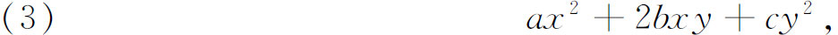
其中a，b和c是整数，是一个二元型，因为它包含着两个变数；它又是一个二次型，因为它是二次的。一个数M称为用型表示出，如果对于a，b，c，x和y的特殊整数值，上一表达式等于M。一个问题是要找一组数，它们能被已给的型或一类型所表示出。逆问题是，已给M与已给a，b和c或某些类的a，b和c，要找能表示出M的x和y的值，这也是同等重要的。后一问题属于丢番图分析，而前一问题也一样可以看成是这一课题的一部分。
在这些问题方面欧拉得到了一些特殊的结果。拉格朗日却做出了关键性的发现：如果一个数能被一个型所表示出，它就能被许多另外的型所表示出；他称这些型是等价的。后者可从原始型用变数变换
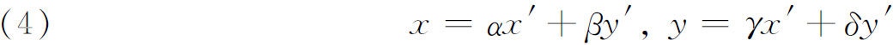
来得到，这里α，β，γ和δ都是整数，并且
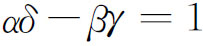
。(25)特别是，拉格朗日阐明了对于一个已给的判别式（discriminant，高斯使用了determinant）b2－ac，存在着有限个型，使得具有这一判别式的每一个型等价于这有限个型中的一个。从而所有具有已给判别式的型可被划分归类，每一类由等价于那个类中的一个成员的一切型所构成。这一结果以及由勒让德归纳得出的一些结果引起了高斯的注意。高斯迈出了大胆的一步，从拉格朗日的著作中抽象出了型的等价的概念，并致力于此。他的《探讨》的第五节，一个出乎寻常的最大的一节，就是专注于这一课题的。高斯系统化了并扩展了型的理论。他首先定义了型的等价。设用（4）把
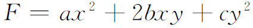
变换为型
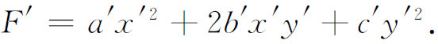
那么
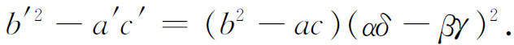
如果现在
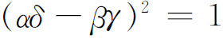
，这两个型的判别式就相等了。于是变换（4）的逆变换将同样包含整系数［根据克莱姆法则］，并将F′变换为F。F和F′称为是等价的。如果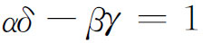
，则F和F′称为固有等价；如果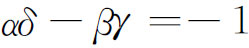
，则F和F′称为非固有等价。高斯证明了一系列关于型的等价的定理。例如，如果F等价于F′，而F′等价于F″，则F等价于F″。如果F等价于F′，则一个数M能被F表示出就能被F′表示出，并且表示出的方法的个数也一样多。然后他说明，在F和F′等价的条件下，如何去找从F变换为F′的所有变换。在x和y的值是互素的情况，他也找到了已知数M被型F表示出的一切表示。
由定义，两个等价的型的判别式
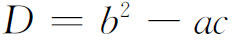
有相同的值，然而两个有相等判别式的型却未必等价。高斯说明了所有具有一个已给D的型可以被划分归类；任一类的成员都是彼此固有等价的。虽然具有一个已给D的型的个数是无限的，但是对于一个已给D的类的个数却是有限的。在每一类中一个型可被取为代表，高斯给出了选择最简单代表的准则。所有以D为判别式的型中最简单的型是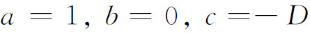
。他称这样的型为主要型，它所属的类为主要类。接着，高斯着手研究型的复合（乘积）。如果型
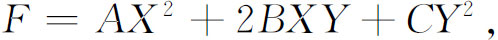
在替换
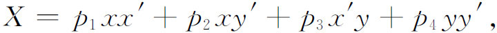
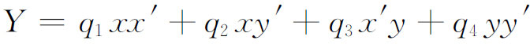
之下被变换为两个型
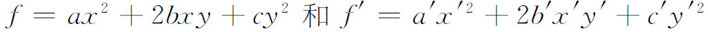
的乘积，那么就称F可被变换为ff′。更进一步，如果六个数
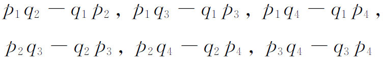
没有公因数，则称F是型f和f′的复合。
于是高斯就能证明一个重要定理：如果f和g属于同一类，而f′和g′属于同一类，则由f和f′所复合的型与由g和g′所复合的型属于同一类。于是人们就可以谈到由两个（或更多）给定的型的类所复合的型的类。在这种类的复合中，主要类起了单位类的作用，就是说，如果类K与主要类相复合，则得出的类仍将是K。
高斯又转向处理三元二次型
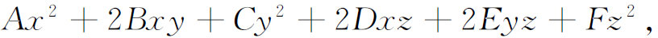
这里系数都是整数，并且作了极类似于他对于二元型所作过的研究。在二元型的情况，目标是整数的表示。高斯对三元型的理论未做深入研究。
关于型的理论的全部工作之目的，已如所述，就是要建立数论中的一些定理。高斯在他研究型的过程中表明，这一理论能怎样被用于证明任何多个关于整数的定理，其中包括许多早已被欧拉和拉格朗日等人证明过的定理。例如，高斯证明了任何形如4n＋1的素数能用一种而且仅是一种方法表示为平方和。任何形如8n＋1或8n＋3的素数能用一种而且仅是一种方法表示为型
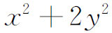
（对正整数x和y而言）。他阐明了如何去找一个已知数M在已给型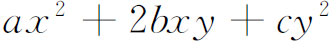
下的所有表示。这里假定判别式D是一个正的非平方数。更进一步，如果K是一个基本型（a，b和c的值是互素的），带有判别式D，并且p是一个能除尽D的素数，那么不能被p整除而能被F表示出的诸数或者都是p的二次剩余，或者都是p的二次非剩余。在高斯关于三元二次型的工作所引出的结果中有下述定理的首次证明：每一个数能表示成三个三角数的和。我们记得，这些数是
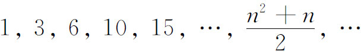
他也重新证明了已被拉格朗日证明过的定理：任何一个正整数能表示为四个数的平方和。谈到这个结果时值得顺便提一下，1815年柯西在巴黎科学院宣读了一篇论文，论文中建立了一个首先为费马所断言的一般性的结果：每一个整数是k或低于k的k角数之和(26)［一般k角数是
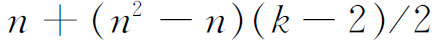
］。高斯提出的二元的和三元的二次型的代数理论有一个有趣的几何模拟，这是高斯自己首先发端的。出现在1830年的《格丁根学报》(27)上关于泽贝尔（Ludwig August Seeber）写的三元二次型的一本书的书评中，高斯概述了他的型和型类的几何表示(28)。这个工作是所谓数的几何理论的发展的一个开端。闵可夫斯基（Hermann Minkowski，1864—1909）曾历任几个大学的数学教授，当他发表了他的《数的几何》（Geometrie der Zahlen，1896）之后，这一理论才得到显著的地位。
在19世纪的数论中，型的理论成为一个主要的课题。关于二元的和三元的二次型以及多元的和高次的型，许多人作了进一步的研究(29)。